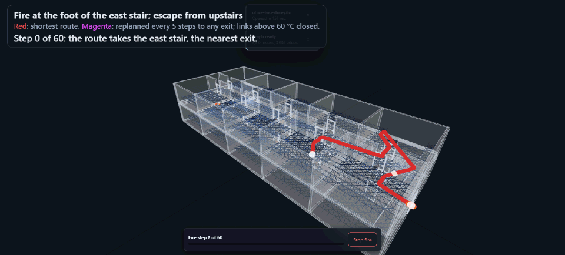
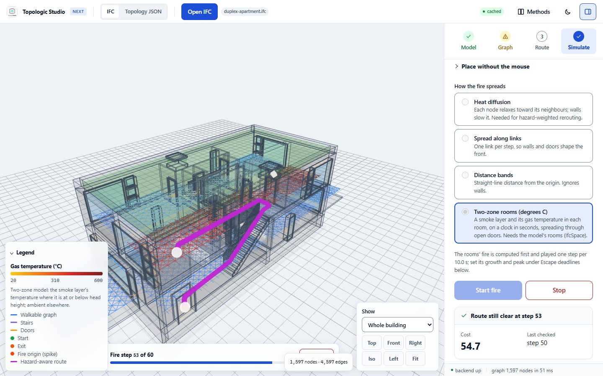
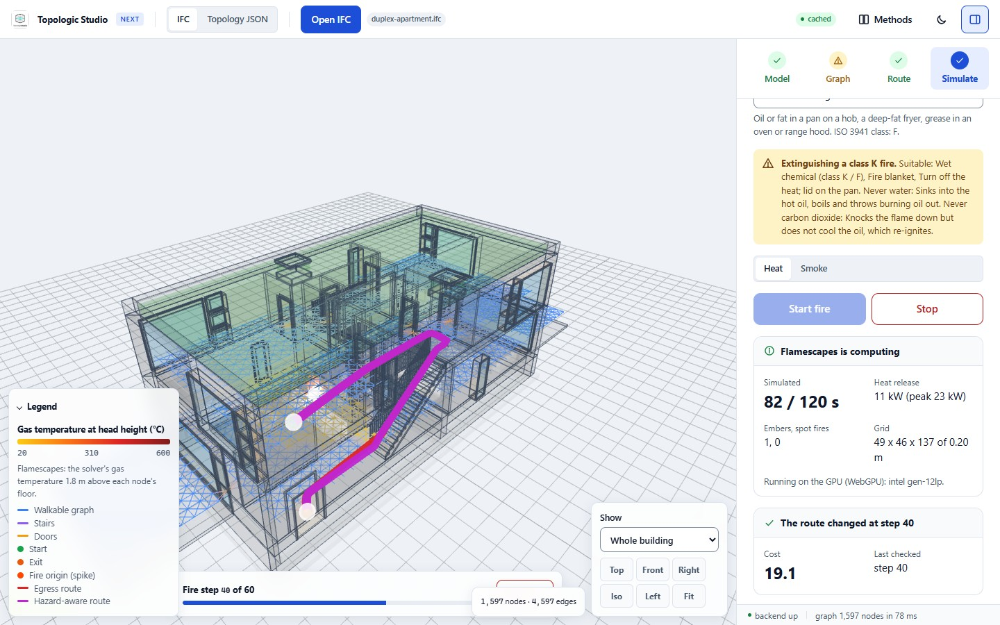
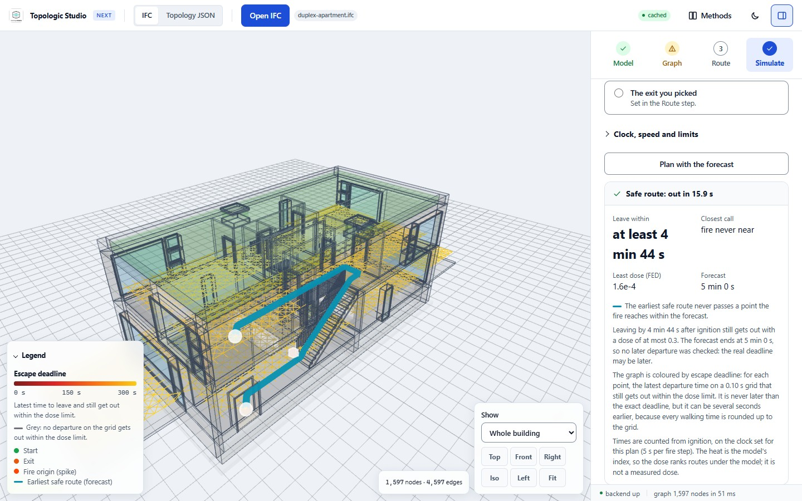
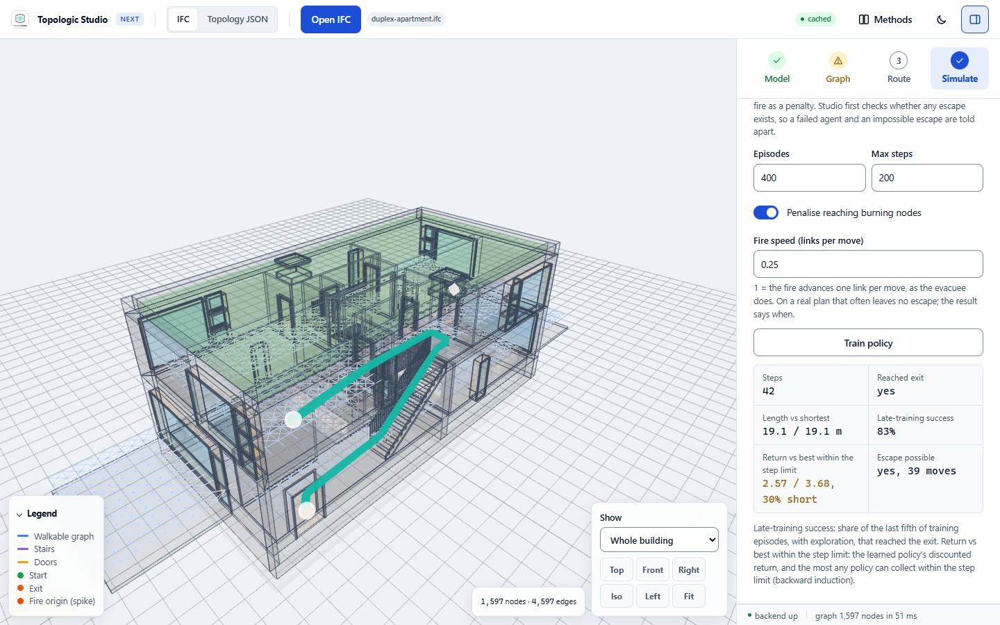
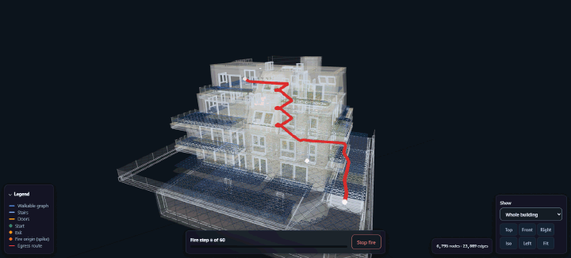
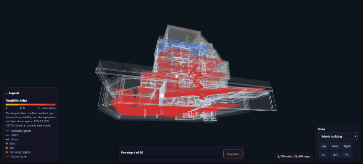

Fire and smoke
The Simulate step starts a fire on the model, moves the route away from the heat, and forecasts when each place becomes untenable. Sprinklers and extinguishers are on the Fire suppression page.
Starting a fire and rerouting
Press Set beside Fire origin (or F), click where the fire starts, and press Start fire. The fire spreads step by step on the graph while the route is checked every five steps and moved away from the heat when it has to be. It may move to any exit out of the building, by another stair if it must; Reroute towards, under Rerouting and timing, keeps it to the exit you picked instead.
While the fire runs, the Route during the fire card says whether the route is still clear, when it last changed, or that there is no safe route. It gives the route's cost (its length in metres, lengthened by the heat as Hazard weight sets), whether it leaves by the exit picked or another, and the step at which it was last checked. A route that has to pass through the fire is drawn but reported as not safe.
The other settings under Rerouting and timing:
- Recompute the route as the fire grows
On by default; it needs a start and an exit. With heat diffusion, two-zone rooms and Flamescapes the route is solved again against the current heat; with spread along links and distance bands, burning nodes are impassable.
- Hazard weight
0.5 by default, 0 to 5. A link costs its length times (1 + weight × degrees above 20 °C / 100), from the mean temperature of its two ends; zero ignores the fire. It acts with the models that give a temperature: heat diffusion (its index), two-zone rooms and Flamescapes (their gas temperature).
- Recompute every
5 steps by default, 1 to 30 steps.
- Impassable above (°C)
Blank by default, 30 to 200. Links whose mean temperature is above it are closed; left blank, heat only adds cost. With heat diffusion it is compared with the model's index, 20 to 120, not a measured temperature; with two-zone rooms, with each room's gas temperature at head height; with Flamescapes, with the run's gas temperature at head height. Spread along links and distance bands have no temperature: they close burning nodes.
- Steps
60 by default, 1 to 2,000: how many steps the fire runs. The two-zone model plays its forecast length in this many frames, and a Flamescapes run keeps this many frames of its simulated time, at most 120 and at most one a second. A kept Flamescapes run is replayed only for the same Steps, so changing it starts a new run.
- Step delay (ms)
120 ms by default, 0 to 2,000 ms: the pause between steps as the fire plays. A Flamescapes run also waits for each frame to be computed.

The fire models
Four fire models are offered, and two more with the optional Flamescapes solver.
| Model | What it does |
|---|---|
| Heat diffusion (default) | Each point relaxes towards its neighbours; walls slow the heat. Needed for heat-weighted rerouting. |
| Spread along links | The fire moves one link per step, so walls and doors shape the front. |
| Distance bands | Straight-line distance from the origin, ignoring walls. |
| Two-zone rooms | A smoke layer and its gas temperature in each room, in seconds and degrees C, spreading through open doors. Needs the model's rooms (IfcSpace). |
| Flamescapes: fire and smoke (optional) | The Flamescapes combustion solver on a 3D grid built from the IFC: buoyant gas flow, burning room contents, radiation and smoke, read at head height at every graph node. |
| Flamescapes: fire, smoke and embers (optional) | As above, with embers carried by the hot gas that can start spot fires away from the flame. |

The Flamescapes solver
The Flamescapes solver is a JavaScript version of the fire solver in Flamescapes: Simulating the Wildlandfire Urban Interface (Wrede, Wagner, Pałubicki, Michels and Pirk, ACM Transactions on Graphics 2026, CC BY 4.0), whose gas chemistry is that of Fire-X (Wrede et al. 2025, doi:10.1145/3763338). No code from either paper is used: the solver is written from the papers, whose transcriptions, with the changes stated, are in the repository's wiki/sources/papers.
Switch it on with Flamescapes combustion solver (optional) in the Simulate step. It runs in your browser: on the GPU through WebGPU where the browser offers it, otherwise on one CPU core at 2.8 to 2.9 times real time for the Duplex (34 to 36 ms a step, tools/fire-bench.mjs), several times faster on a GPU. Its frames play as they are computed, and the route reroutes on the gas temperature at head height.
A finished run is kept in the browser (at most 256 MB), so the same fire asked for again, after a reload too, plays from its kept frames instead of being computed; Forget kept runs clears them.
Flamescapes settings
Folded under Flamescapes settings, below the run card:
- Simulated time (s)
180 s by default, 30 to 900 s: how long the fire is run. The run is kept as frames, as many as Steps under Rerouting and timing, at most 120 and at most one a second: by default 60 frames 3 s apart.
- Fire load (MJ/m²)
The room contents per square metre of floor, 780 MJ/m² by default (the Eurocode mean for dwellings), 50 to 3,000.
- Untenable from (gas °C)
60 °C by default, 30 to 200: a node is untenable once its gas at head height reaches this temperature.
- Untenable below visibility (m)
10 m by default, 1 to 30 m.
- Smoke makes a place untenable
On by default: visibility below the limit closes a node, as gas above the temperature does. Off, only the temperature and the doses close it. These three limits, with the ISO 13571 doses, are what the run card, the tenability index, the forecast, the exports, and the people and the slime mould that keep out of the fire read as untenable.
- Run on
The GPU where the browser offers WebGPU, else the CPU (the default), or the CPU on one core.
- Windows and Ventilation
See Doors, windows and ducts. With the ventilation running, Air through each terminal (L/s) sets the air each terminal moves: 100 L/s by default, 10 to 1,000, an assumption rather than a value read from the model.
- Fire solver
Validated (the default): the solver whose transport conserves the gas's mass and heat, checked against held-out measured room fires (see Limits). Previous: the solver as the site ran it until 2026-11-12, kept to compare with; its transport made heat as gases mixed, it was not checked against measurements, and its runs say so on their card. Runs on the two are kept apart.
- Grid
Standard (the default): the same grid on every device, so the GPU and the CPU give one fire; a phone's or small machine's CPU builds a lighter one and its card says so. 0.27 m cells: the cell size on which the smoke layer's depth was calibrated against held-out room fire tests, clipped round the fire to what the device holds; a GPU holds a far larger area than a CPU, and under an atrium the cells may coarsen to fit, which the card then says. Or, on the GPU, finer (sized from its speed over a run's first seconds) or finest (all its memory allows, slower), which no measurement has checked. The fire depends on the grid, so keep one grid when comparing runs; the run card gives the grid and what holds on it.
On a laptop with two graphics chips, Chrome on Windows runs WebGPU on whichever one Windows gives it, often the integrated Intel one, whatever the page asks for. To use a faster NVIDIA or AMD card, open chrome://flags/#force-high-performance-gpu in Chrome, enable it and restart Chrome; or in Windows Settings, System, Display, Graphics, set the browser to High performance and restart it. The panel names the GPU the browser offers under Run on, before any run, and says this when it is the integrated one.
- Repeat runs on the GPU
One run (the default), 4 or 8. A fire that catches the room's contents is partly chance. After the run you watch, the GPU makes the rest on the same grid, each with the room a thousandth of a degree warmer, while the view plays on, and the card gives the median and range of the untenable nodes, the first untenable time, the peak and the energy. None are made on the CPU, where each would take as long as the first.
- Record soot, CO₂ and O₂ too
On by default. Needed for the CO₂ and O₂ readings, the tenability index's CO₂ and O₂ terms, and the exports' soot, CO₂ and O₂. Recording them doubles what each stored frame holds, so a run past 64 MB of frames keeps temperature, visibility and CO only, and its card says so.
- Keep finished runs in this browser
On by default: the kept runs above, at most 256 MB, the runs used least recently going first.
Smoke, gases and tenability
Show on the graph colours the nodes by one of four readings at head height:
- Heat: the gas temperature.
- Smoke: the visibility (the default), or the soot concentration, extinction coefficient, obscuration or optical density it comes from, chosen under Smoke measure. All five come from the soot at head height, so they shade the graph alike; the legend reads in the one chosen.
- Gases: CO, CO₂ or O₂.
- Tenability index: the largest share of a limit a node has reached, over its gas temperature, its visibility, and the asphyxiant and heat doses of ISO 13571 against a fractional effective dose of 0.3, so that 1 means untenable.
The smoke the solver carries (its soot) is drawn as a grey cloud, faint in the heat view and full in the smoke view. The run card says whether embers are on, and how many were thrown and how many spot fires they lit.
Doors, windows and ducts
Doors can be open, closed, as built or random. As built closes the doors the model says close themselves: Pset_DoorCommon.SelfClosing, or a fire rating whose EN 13501-2 class carries the self-closing mark -C (14 of the Vienna model's 81 doors, rated EI2 30-C or EI2 30-C-Sm). Random closes a share of the doors chosen with a seed, so a run can be repeated and compared with another seed: Closed (%) sets the share, 50 % by default, and Seed picks the doors (1 by default), the same seed closing the same doors.
Doors are open and windows closed unless the Doors switch beside the fire controls or Windows in the Flamescapes settings say otherwise. A closed door or window has no gaps: with everything closed on the Duplex, 0.0 g of 138 g of soot reached the outside air after 60 s, against 24 % with the doors open, the default (tools/envelope-check.mjs). A grid clipped round the fire lets smoke out at its sides, which the run card says.
Atria: a space named as a void ("open to below") is never a floor in the fire grid, so smoke rises through an atrium as it would in the building. A model with no floor slabs takes its floors from its rooms' bottoms, and until 2026-11-11 the voids' bottoms sealed the NIBS Clinic's atria at the upper storey's floor, 4.57 m up. A grid clipped round a fire under an atrium now reaches the atrium's top and half a storey over it, its cells coarser for the same count. On the Clinic, over a 120 s run, the upper storey over the atrium went from clear air to 0.4 to 0.7 m of visibility at head height. The Clinic has no roof over its atria, so its smoke leaves through the top of the grid there. Runs kept from before this change are not reused.
Ventilation: running joins the model's air terminals through one well-mixed duct volume at an assumed 100 L/s a terminal, without reading which system each belongs to or the ducts themselves, so it shows the furthest the ducts could spread smoke.
What burns first, and where
The first item takes the fuel of its fire class. The panel says which extinguishers suit the class and which are dangerous on it, for example water on cooking oil. Each class's heat of combustion, CO and soot yields, growth and ignition temperature come from a literature review and are cited in the source file fireClasses.js.
How the first item grows. Since 2026-11-08 a solid first item (classes A and C) grows as a t-squared design fire, Q = α t², until its fuel is spent: by default its class's growth (medium, 0.0117 kW/s², for both, after EN 1991-1-2 for dwellings and offices), or slow, medium, fast or ultra-fast under How it grows. It burns as a prescribed source over its own floor area, with its fuel's smoke, and the room's contents catch from it. Its flame is drawn over it as high as Heskestad's flame height reaches, coloured by McCaffrey's (1979) mean flame and plume temperatures; the drawing takes no part in the run. Sprinkler water from a head over it decays it as Evans measured, and clean agent at the class A concentration puts it out. Since 2026-11-12 a pool (a spill, class B, or a pan of oil, class K) is a design fire too: it grows at its class's rate to its steady burning rate, Babrauskas's (1983) large-pool rate over its area (19 kW for the pan), and burns at it until spent. On the coarse grid a pool's own flame cannot keep its surface boiling, so a pan lit by its pilot went out about 40 s in; the earlier solver kept it alight with heat its transport made. Water does not act on oil, and clean agent puts a pool out at heptane's concentration. A metal or a battery pack keeps its own burning. Before, the solver lit and burned the item itself, which took every example to about 500 kW within 15 s, faster than any design fire; As the solver burns it keeps that.
| Class | Fuel | Source of the class |
|---|---|---|
| A | Ordinary combustibles | NFPA 10 |
| B | Flammable liquids | NFPA 10 |
| C | Energised electrical equipment | NFPA 10 |
| D | Metals | NFPA 10 |
| K | Cooking oils | NFPA 10 |
| L | Lithium-ion batteries | ISO 3941:2026 |
Likely ignition points finds where a fire most often starts in your model, from its appliances, furniture and rooms ranked by their share of fire deaths, and Start here puts the fire there with its class. Cause narrows the list to one cause (cooking, an electrical fault, gas or liquid fuel, heating, smoking or candles, lithium-ion batteries, waste, or a deliberate fire with an accelerant); a gas fire at a cooktop starts as class B rather than as cooking oil.

Planning with the forecast
Plan with the forecast, in the section Escape deadlines and forecast routes, runs the fire to its end first, then routes with the state each point will be in when you would reach it. It reports the earliest safe route and how long you could wait before leaving, and colours the graph by escape deadline: for each point, the latest time to set off and still get out within the dose limit. The defaults are a fractional effective dose of 0.3 and walking at 1.2 m/s, over a five-minute forecast with the graph models; all of these can be changed under Clock, speed and limits. With a Flamescapes run it plans on the same run, adding the CO dose of ISO 13571 to the heat dose. It needs a start and a fire origin, and an exit when Exits is set to the exit you picked rather than every exit out of the building (the default).
With Two-zone rooms chosen, The room fire opens above the clock. Its settings drive the live two-zone fire too.
- Growth
A t-squared fire in the room of the fire origin: slow, medium (the default), fast or ultra-fast, reaching 1 MW in 600, 300, 150 or 75 s.
- Peak heat release (kW)
5,000 kW by default, 50 to 50,000 kW. The fire is capped at this peak or at what the room's doors let it burn, whichever is lower.
- Smoke at head height is untenable
On by default: a point closes once its room's smoke layer is down to 1.8 m, however hot. Off, only the gas temperature closes it.
Under Clock, speed and limits:
- Forecast length (s)
Two-zone rooms only: 600 s by default, 60 to 1,800 s. It is also the length of the live two-zone fire.
- Seconds per fire step
The graph models: 5 s by default, 0.5 to 60 s. The graph models count steps; this sets the clock, so 60 steps make a five-minute forecast.
- Walking speed (m/s)
1.2 m/s by default, 0.2 to 3 m/s. The performance check and the extinguisher attempt walk at it too.
- Untenable from (gas °C)
Two-zone rooms only: 60 °C by default, 30 to 200.
- Untenable from (model °C)
The graph models: 80 by default, 25 to 120, on the index that reads 20 to 120 (see Limits). Spread along links and distance bands put a burning node at the top of the scale, so with them a node closes when the fire reaches it.
- Leave after (s)
0 s by default: when the person sets off, counted from ignition.
- Toxic dose limit (FED)
0.3 by default, 0.01 to 1. ISO 13571 uses a fractional effective dose of 0.3 to protect most occupants and 1 for the average adult.
- Colour the graph by escape deadline
On by default. The deadline map is the slow part of planning and is made only when it will be drawn. The performance check reads it, so leave it on to run the check.
With a Flamescapes fire the forecast keeps the run's own clock and limits, Untenable from (gas °C) and the visibility in the Flamescapes settings; Seconds per fire step and Untenable from (model °C) are then not used, and the panel greys them out and says so.

The escape deadlines are what the performance check reads.
A learned escape
Train an agent against this fire trains an agent to find its own way out while the fire spreads, from the start set in the Route step; it needs an exit set there too. Studio first checks whether any escape exists, so a failed agent and an impossible escape are told apart. The Learning method is one of two:
- Safe learner (proved), the default: learns on (node, time) behind a shield that never lets it step where the fire will seal it in. It stops when it can prove its route is the earliest escape, by any exit door or the chosen one. Both properties are proved in Lean (
SafeEscape.lean). - Q-learning: the earlier tabular Q-learning (after Jabi et al. 2019), kept for comparison. Its route is drawn by a walk that never revisits a node.
The agent's fire is its own, not the fire model chosen above: it starts at the fire origin and spreads along the links, as Spread along links does, at a speed you set, held back by walls when Walls block routes is on. Time is counted in moves, one link each.
- Escape by
The safe learner only: any exit out of the building (the default), or the chosen exit.
- Episodes
Q-learning only: 400 training episodes by default, at least 10. The safe learner runs up to 20,000 trials and stops sooner when its route is certified.
- Max steps
200 moves by default, 10 to 1,000: the step limit. An escape must reach an exit within it.
- Train with the fire
On by default: the agent trains against its own fire. It needs a fire origin; without one the agent trains without fire. Off, it learns its way out as if there were no fire. What the fire does to the agent depends on the method: Q-learning loses 10 for stepping into a burning node, which ends the episode; the safe learner's shield never lets it step where the fire will seal it in, so for it the switch only turns the fire on or off.
- Fire speed (links per move)
1 by default, 0.05 to 10: how many links the fire advances each time the evacuee moves one. At 1, with the fire on or beside the route, the study's runs had no escape in 70 of 72; the result says when.
The result:
- Steps
The moves the agent's route takes.
- Reached exit
Yes, no, or burned (the route ran into the fire).
- Length vs shortest
The agent's route against the shortest walk with no fire to the exit, or to the nearest of the exits it may use, both in metres on the graph.
- Moves vs earliest escape
The safe learner: its moves against the earliest escape found by an exact search. They match whenever it is certified.
- Certified earliest
The safe learner: yes when it proved, from its own bounds, that no route leaves sooner.
- Trials
The safe learner: how many trials it took.
- Late-training success
Q-learning: the share of the last fifth of the training episodes, with exploration, that reached the exit.
- Return vs best within the step limit
Q-learning: the learned policy's discounted return against the most any policy can collect within the step limit, worked out by backward induction, with how far short it falls; more than 5 % short is flagged. The rewards are +10 at the exit, -10 in the fire and -0.1 for each median link's length walked, discounted by 0.99 a move.
- Escape possible
With the fire on: whether any route escapes it within the step limit, and in how many moves, by an exact search.
In a study of 848 runs on nine buildings (the reinforcement learning study, tools/rl-bench.mjs), most "failures" near the fire had no escape at all. Where one existed, the Q-learning's drawn path missed it in 15% of runs, mostly from the way its path was drawn. The shielded learner escaped in all of them, by the earliest route, certified, in a median 1.8 ms.

A fire in a larger building
The animations below repeat the Simulate step on the Vienna apartment building (TU Wien), seven levels and 111 rooms. Each is a 300 s Flamescapes run with embers, computed on the GPU in the browser. The fire starts in a flat's living-kitchen, and the person leaves from the top floor, 53.8 m down the stairwell to the street door. They were recorded before Studio counted the first-floor fire exit at the back, which is now the nearer way out, at 33.6 m.


The building model is by Fischer, Schranz, Urban, Pfeiffer and Flamm (TU Wien, 2024, doi:10.48436/wzp90-dmf60), under CC BY 4.0. The animations were made from frames of the running app with tools/frames-gif.mjs.
Limits of the fire models
- A coarse grid. Flamescapes in the browser is coarse. The paper resolves centimetres on a desktop GPU; here a cell is 0.2 to 0.45 m and a step 0.1 s. A surface layer of the fuel, a sub-grid rule for where an ember lands, the first item as a prescribed design fire, the paper's raised solid-gas heat transfer coefficient for the fuel and exact integration of each reaction over a step stand in for what the paper resolves. Once the room's contents catch, the fire grows as the solver spreads it, which is not calibrated against room fire tests.
- What burns. Walls and slabs do not burn. Room contents are a statistical fire load, and CO does not rise when the fire is short of air.
- Embers. Indoors at these cells embers seldom land hot enough to light anything: in a 120 s fire in the Duplex they lit none.
- Pools. A liquid pool (classes B and K) evaporates at most at its burning rate (Babrauskas 1983) and lights, but much of its vapour stays unburnt: a 1 m² heptane pool reached 0.3 MW after 30 s in a test room, against the 3.2 MW its burning rate allows.
- Narrow openings. An opening narrower than about one cell closes on the grid: a 0.25 m gap on any of the app's cells, and a 0.36 m one on 0.34 m cells, let no gas through in the validation runs. A 0.74 m door stayed open on every cell size, narrowed to whole cells (0.54 m on 0.27 m cells).
- Large models. Large models are clipped to the area round the fire, and the grid's sides are open to outside air, so a clipped building is never fully closed.
- Expansion, not pressure. Heated gas expands and leaves its cell, as in the low-Mach form fire models use, and the transport keeps the gas's mass and heat: a sealed box of mixing hot and cold gas keeps its heat within 0.1 % (before 2026-11-12 the transport made heat, up to half again in a minute). A room sealed by closed doors cannot let its gas out and its pressure does not rise, so heat there stays as hotter, thinner gas.
- What is checked against measured fires. The solver's one fitted constant (its confinement, 3) was fitted on McCaffrey's plume and Alpert's ceiling jet. It was then compared, by rules written before the comparisons, with 74 room fire tests it was never fitted to: Steckler's (NBS, 1982), NBS's multi-room tests (1991), and NIST's NRC (2006) and WTC (2005) compartments, prescribed fires of 32 kW to 3.2 MW in rooms of 17 to 584 m³. The smoke layer's depth is calibrated on 0.27 m cells: its bias is 1.05 and its scatter 0.15, within the FDS Validation Guide's calibrated band in all four series. It is indicative on 0.20 and 0.34 m cells. The layer's temperature and the gas under the ceiling are indicative; oxygen, carbon dioxide and the flow through a door are not calibrated, and smoke visibility has not yet been compared. Those tests had insulating-board walls; the app gives every wall stone, which they did not cover. Each Flamescapes run's card says what holds on its own cells. The first sprinkler's opening, by the app's estimate, is within the calibrated band against NIST, University of Canterbury and UL tests run with their measured fires (bias 0.95 to 1.18), though the walls' heat transfer was set on those tests. Where the gas moves fast, each frame is cut into up to eight smaller steps.
- A stopped run. A run whose gas goes past what a fire can do (hotter than 3,000 K, faster than 50 m/s, or holding over one and a half times the heat the fire has put in) is stopped, and the card says why and when. The frames before it play; the run is not kept in the browser.
- Temperature. In the graph models the temperature is an index, scaled to read 20 to 120 degrees C, not a temperature a sensor would measure. Doses computed from it rank routes under the model; the ISO 13571 limits do not carry over.
- Time in steps. The graph models count fire time in steps; the forecast converts steps to seconds with a factor you set (Seconds per fire step). Fire growth is not calibrated.
- Waiting. In the live simulation the evacuee waits while the fire grows, and each reroute starts from the original start. A route that has to pass through fire is drawn but reported as not safe. A route stays within one part of the graph.
- Walking. Stairs are walked at level speed (reference tools use about half to nine tenths of it). The routes have no queues at doors, no slowing in smoke and no pre-movement time; the performance check adds pre-movement and queues at doors. An assumed stair has no known width, and a lift ride counts as walking its rise, with no wait for the car.